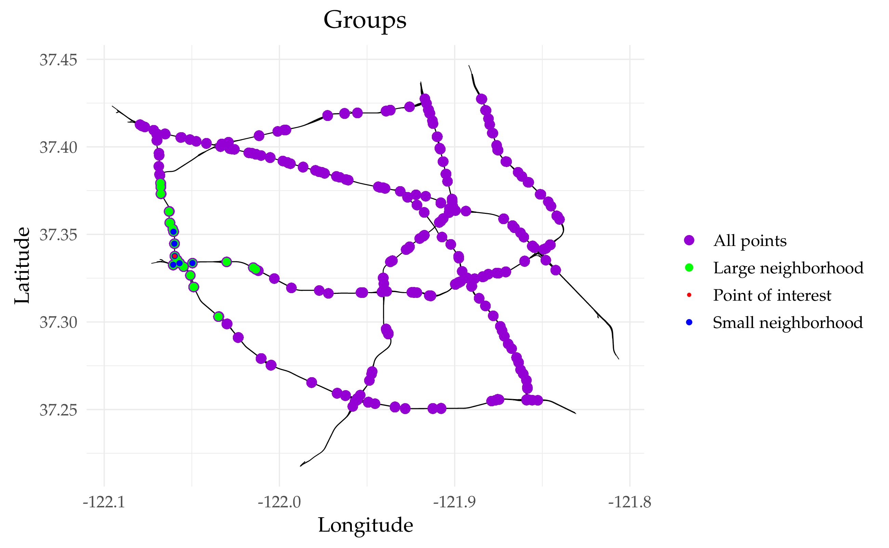

PeMS 2, modeling
Last modified: 01-05-2026.
Go back to the Contents page.
Press Show to reveal the code chunks.
Go back to the About page.
This vignette compares different models for PeMS data. It uses pems_repl1_data.RData,
which is a file with a graph and data created in pems_repl1.html.
Let us set some global options for all code chunks in this document.
# Set seed for reproducibility
set.seed(1938)
# Set global options for all code chunks
knitr::opts_chunk$set(
# Disable messages printed by R code chunks
message = FALSE,
# Disable warnings printed by R code chunks
warning = FALSE,
# Show R code within code chunks in output
echo = TRUE,
# Include both R code and its results in output
include = TRUE,
# Evaluate R code chunks
eval = FALSE,
# Enable caching of R code chunks for faster rendering
cache = FALSE,
# Align figures in the center of the output
fig.align = "center",
# Enable retina display for high-resolution figures
retina = 2,
# Show errors in the output instead of stopping rendering
error = TRUE,
# Do not collapse code and output into a single block
collapse = FALSE
)
# Start the figure counter
fig_count <- 0
# Define the captioner function
captioner <- function(caption) {
fig_count <<- fig_count + 1
paste0("Figure ", fig_count, ": ", caption)
}
# Define the function to truncate a number to two decimal places
truncate_to_two <- function(x) {
truncated <- floor(x * 100) / 100
sprintf("%.2f", truncated)
}Below we load the necessary libraries.
library(INLA)
library(inlabru)
library(rSPDE)
library(MetricGraph)
library(dplyr)
library(plotly)
library(scales)
library(patchwork)
library(ggplot2)
library(cowplot)
library(ggpubr) #annotate_figure()
library(grid) #textGrob()
library(ggmap)
library(viridis)
library(OpenStreetMap)
library(tidyr)
library(sf)
library(here)
library(rmarkdown)
library(grateful) # Cite all loaded packagesBelow we define function process_model_results() to
extract the summary of the parameters of the model.
process_model_results <- function(fit, model) {
fit_spde <- rspde.result(fit, "field", model, parameterization = "spde")
fit_matern <- rspde.result(fit, "field", model, parameterization = "matern")
df_for_plot_spde <- gg_df(fit_spde)
df_for_plot_matern <- gg_df(fit_matern)
param_spde <- summary(fit_spde)
param_matern <- summary(fit_matern)
param_fixed <- fit$summary.fixed[,1:6]
marginal.posterior.sigma_e = inla.tmarginal(
fun = function(x) exp(-x/2),
marginal = fit[["internal.marginals.hyperpar"]][["Log precision for the Gaussian observations"]])
quant.sigma_e <- capture.output({result_tmp <- inla.zmarginal(marginal.posterior.sigma_e)}, file = "/dev/null")
quant.sigma_e <- result_tmp
statistics.sigma_e <- unlist(quant.sigma_e)[c(1,2,3,5,7)]
mode.sigma_e <- inla.mmarginal(marginal.posterior.sigma_e)
allparams <- rbind(param_fixed, param_spde, param_matern, c(statistics.sigma_e, mode.sigma_e))
rownames(allparams)[nrow(allparams)] <- "sigma_e"
return(list(allparams = allparams, df_for_plot_spde = df_for_plot_spde, df_for_plot_matern = df_for_plot_matern))
}We first load the data in the file pems_repl1_data.RData
and extract the data from the graph.
# Load the data
load(here("data_files/pems_repl1_data.RData"))
# Extract the data from the graph
data <- graph$get_data()Below we extract the locations to compute the distance matrix. Using this matrix, we define the groups for cross-validation. Observe that we only compute the distance matrix for the first replicate and compute the groups for it. As all replicates share the same locations, we can use the groups structure from the first replicate for all replicates.
# Define aux data frame to compute the distance matrix
aux <- data |> filter(repl == 1) |>
rename(distance_on_edge = .distance_on_edge, edge_number = .edge_number) |> # Rename the variables (because graph$compute_geodist_PtE() requires so)
as.data.frame() |> # Transform to a data frame (i.e., remove the metric_graph class)
dplyr::select(edge_number, distance_on_edge)
# Compute the distance matrix
distmatrix <- graph$compute_geodist_PtE(PtE = aux,
normalized = TRUE,
include_vertices = FALSE)
# Compute the groups for one replicate
GROUPS <- list()
for (j in 1:length(distance)) {
GROUPS[[j]] = list()
for (i in 1:nrow(aux)) {
GROUPS[[j]][[i]] <- which(as.vector(distmatrix[i, ]) <= distance[j])
}
}
# Compute the groups for all replicates, based on the groups of the first replicate
nrowY <- length(unique(data$repl))
ncolY <- nrow(filter(data, repl == 1))
NEW_GROUPS <- list()
for (j in 1:length(distance)) {
my_list <- GROUPS[[j]]
aux_list <- list()
for (i in 0:(nrowY - 1)) {
added_vectors <- lapply(my_list, function(vec) vec + i*ncolY)
aux_list <- c(aux_list, added_vectors)
}
NEW_GROUPS[[j]] <- aux_list
}
GROUPS <- NEW_GROUPS
save(GROUPS, file = here("data_files/groups_for_cv.RData"))Below we plot to check that the groups are correctly defined.
point_of_interest <- 3 # Any number between 1 and nrow(data)
small_neighborhood <- GROUPS[[20]][[point_of_interest]]
large_neighborhood <- GROUPS[[50]][[point_of_interest]]
p_neig <- graph$plot(vertex_size = 0) +
geom_point(data = data,
aes(x = .coord_x, y = .coord_y, color = "All points"),
size = 2) +
geom_point(data = data[large_neighborhood, ],
aes(x = .coord_x, y = .coord_y, color = "Large neighborhood"),
size = 1.5) +
geom_point(data = data[small_neighborhood, ],
aes(x = .coord_x, y = .coord_y, color = "Small neighborhood"),
size = 1) +
geom_point(data = data[point_of_interest, ],
aes(x = .coord_x, y = .coord_y, color = "Point of interest"),
size = 0.5) +
scale_color_manual(
values = c(
"All points" = "darkviolet",
"Large neighborhood" = "green",
"Small neighborhood" = "blue",
"Point of interest" = "red"
),
name = ""
) +
ggtitle("Groups") +
theme_minimal() +
theme(text = element_text(family = "Palatino"),
plot.title = element_text(hjust = 0.5)) +
coord_fixed()
p_neig_plotly <- plotly::ggplotly(p_neig)
save(p_neig_plotly, file = here("data_files/plotly_groups_for_cv.RData"))
myggsave(p_neig, width = 6.5, height = 4.01)
Figure 1: Illustrations of groups for cross-validation based on the distance matrix.
Below we define the non-stationary parameters.
We now model the speed records \(y_i\) as 13 independent replicates satisfying \[\begin{equation} \label{applimodel} y_i|u(\cdot)\sim N(\beta_0 + \beta_1\text{mean.cov}(s_i) + u(s_i),\sigma_\epsilon^2),\;i = 1,\dots, 314, \end{equation}\] where \(u(\cdot)\) is a Gaussian process on the highway network. We consider stationary models with \(\kappa,\tau>0\) and non-stationary models where \(\tau\) and \(\kappa\) are given by \[\begin{equation} \label{logregressions} \begin{aligned} \log(\tau(s)) &= \theta_1 + \theta_3 \text{std.cov}(s),\\ \log(\kappa(s)) &= \theta_2 + \theta_4 \text{std.cov}(s). \end{aligned} \end{equation}\]
For each of the two classes of models, we consider three cases: when (1) \(\nu\) is fixed to 0.5 or (2) 1.5, and (3) \(\nu\) is estimated from the data.
Below cov refers to \(\text{std.cov}(s)\) and
mean_value refers to \(\text{mean.cov}(s)\).
1 Case \(\nu = 0.5\)
We first consider the stationary model.
# Build the model
rspde_model_stat <- rspde.metric_graph(graph,
parameterization = "spde",
nu = 0.5)
# Prepare the data for fitting
data_rspde_bru_stat <- graph_data_rspde(rspde_model_stat,
repl = ".all",
bru = TRUE,
repl_col = "repl")
# Define the component
cmp_stat <- y ~ -1 +
Intercept(1) +
mean_value +
field(cbind(.edge_number, .distance_on_edge),
model = rspde_model_stat,
replicate = repl)
# Fit the model
rspde_fit_stat <-
bru(cmp_stat,
data = data_rspde_bru_stat[["data"]],
family = "gaussian",
options = list(verbose = FALSE)
)
output_from_models <-process_model_results(rspde_fit_stat, rspde_model_stat)
parameters_statistics <- output_from_models$allparams
mean_and_mode_params_statnu0.5 <- parameters_statistics[, c(1,6)]
rspde_fit_statnu0.5 <- rspde_fit_statWe now fit the non-stationary model.
# Build the model
rspde_model_nonstat <- rspde.metric_graph(graph,
B.tau = B.tau,
B.kappa = B.kappa,
parameterization = "spde",
nu = 0.5)
# Prepare the data for fitting
data_rspde_bru_nonstat <- graph_data_rspde(rspde_model_nonstat,
repl = ".all",
bru = TRUE,
repl_col = "repl")
# Define the component
cmp_nonstat <- y ~ -1 +
Intercept(1) +
mean_value +
field(cbind(.edge_number, .distance_on_edge),
model = rspde_model_nonstat,
replicate = repl)
# Fit the model
rspde_fit_nonstat <-
bru(cmp_nonstat,
data = data_rspde_bru_nonstat[["data"]],
family = "gaussian",
options = list(verbose = FALSE)
)
output_from_models <- process_model_results(rspde_fit_nonstat, rspde_model_nonstat)
parameters_statistics <- output_from_models$allparams
mean_and_mode_params_nonstatnu0.5 <- parameters_statistics[, c(1,6)]
rspde_fit_nonstatnu0.5 <- rspde_fit_nonstatBelow we consider the prediction of replicate 14.
# Load the maps p12 and p13 from pems_repl1 vignette
load(here("data_files/maps_zoom12and13from_stadia.RData"))
# We consider replicate 14
replicate.number <- 1
# Prepare the data for prediction
data_prd_list_for_rep <- data_prd_list_mesh
data_prd_list_for_rep[["mean_value"]] <- cov_for_mean_to_plot
data_prd_list_for_rep[["repl"]] <- rep(replicate.number, nrow(data_prd_list_mesh))
# Perform the prediction
repl1_pred_full <- predict(rspde_fit_nonstat, newdata = data_prd_list_for_rep, ~Intercept + mean_value + field_eval(cbind(.edge_number, .distance_on_edge), replicate = repl))
repl1_pred_mean <- repl1_pred_full$mean
# Extract the Euclidean coordinates of the mesh points
xypoints <- graph$mesh$V
# Extract the range of the coordinates
x_left <- range(xypoints[,1])[1]
x_right <- range(xypoints[,1])[2]
y_bottom <- range(xypoints[,2])[1]
y_top <- range(xypoints[,2])[2]
# Define coordinates for small windows
coordx_lwr1 <- -121.878
coordx_upr1 <- -121.828
coordy_lwr1 <- 37.315
coordy_upr1 <- 37.365
coordx_lwr2<- -122.075
coordx_upr2 <- -122.025
coordy_lwr2 <- 37.365
coordy_upr2 <- 37.415
# Define the colors for the windows
lower_color <- "darkred" # Dark purple
upper_color <- "darkblue" # Yellow
# Plot the field on top of the map
f12 <- graph$plot_function(X = repl1_pred_mean,
vertex_size = 0,
p = p12,
edge_width = 0.5) +
theme_minimal() +
theme(text = element_text(family = "Palatino"),
axis.text = element_text(size = 8),
legend.text = element_text(size = 8),
plot.margin = unit(-0.4*c(1,0,1,1), "cm")
) +
labs(color = "", x = "", y = "") +
xlim(x_left, x_right) +
ylim(y_bottom, y_top)
# Plot the field on top of the map
f13 <- graph$plot_function(X = repl1_pred_mean,
vertex_size = 0,
p = p13,
edge_width = 0.5) +
theme_minimal() +
theme(text = element_text(family = "Palatino"),
axis.text = element_text(size = 8),
legend.text = element_text(size = 8),
plot.margin = unit(-0.4*c(1,0,1,1), "cm")
) +
labs(color = "", x = "", y = "") +
xlim(x_left, x_right) +
ylim(y_bottom, y_top)
g12 <- graph$plot(data = "y", group = 1, vertex_size = 0, p = f12, edge_width = 0, data_size = 1) +
labs(color = "", x = "", y = "") +
annotate("segment", x = coordx_lwr1, y = coordy_lwr1, xend = coordx_upr1, yend = coordy_lwr1,
linewidth = 0.4, color = upper_color) + # Bottom line
annotate("segment", x = coordx_lwr1, y = coordy_upr1, xend = coordx_upr1, yend = coordy_upr1,
linewidth = 0.4, color = upper_color) + # Top line
annotate("segment", x = coordx_lwr1, y = coordy_lwr1, xend = coordx_lwr1, yend = coordy_upr1,
linewidth = 0.4, color = upper_color) + # Left line
annotate("segment", x = coordx_upr1, y = coordy_lwr1, xend = coordx_upr1, yend = coordy_upr1,
linewidth = 0.4, color = upper_color) + # Right line
annotate("segment", x = coordx_lwr2, y = coordy_lwr2, xend = coordx_upr2, yend = coordy_lwr2,
linewidth = 0.4, color = lower_color) +
annotate("segment", x = coordx_lwr2, y = coordy_upr2, xend = coordx_upr2, yend = coordy_upr2,
linewidth = 0.4, color = lower_color) +
annotate("segment", x = coordx_lwr2, y = coordy_lwr2, xend = coordx_lwr2, yend = coordy_upr2,
linewidth = 0.4, color = lower_color) +
annotate("segment", x = coordx_upr2, y = coordy_lwr2, xend = coordx_upr2, yend = coordy_upr2,
linewidth = 0.4, color = lower_color)
g13 <- graph$plot(data = "y", group = 1, vertex_size = 0, p = f13, edge_width = 0, data_size = 1) +
labs(color = "", x = "", y = "") +
annotate("segment", x = coordx_lwr1, y = coordy_lwr1, xend = coordx_upr1, yend = coordy_lwr1,
linewidth = 0.4, color = upper_color) + # Bottom line
annotate("segment", x = coordx_lwr1, y = coordy_upr1, xend = coordx_upr1, yend = coordy_upr1,
linewidth = 0.4, color = upper_color) + # Top line
annotate("segment", x = coordx_lwr1, y = coordy_lwr1, xend = coordx_lwr1, yend = coordy_upr1,
linewidth = 0.4, color = upper_color) + # Left line
annotate("segment", x = coordx_upr1, y = coordy_lwr1, xend = coordx_upr1, yend = coordy_upr1,
linewidth = 0.4, color = upper_color) + # Right line
annotate("segment", x = coordx_lwr2, y = coordy_lwr2, xend = coordx_upr2, yend = coordy_lwr2,
linewidth = 0.4, color = lower_color) +
annotate("segment", x = coordx_lwr2, y = coordy_upr2, xend = coordx_upr2, yend = coordy_upr2,
linewidth = 0.4, color = lower_color) +
annotate("segment", x = coordx_lwr2, y = coordy_lwr2, xend = coordx_lwr2, yend = coordy_upr2,
linewidth = 0.4, color = lower_color) +
annotate("segment", x = coordx_upr2, y = coordy_lwr2, xend = coordx_upr2, yend = coordy_upr2,
linewidth = 0.4, color = lower_color)
r1 <- g13 + xlim(coordx_lwr1, coordx_upr1) +
ylim(coordy_lwr1, coordy_upr1) +
theme(legend.position = "none",
plot.margin = unit(-0.2*c(1,1,1,1), "cm"))
r2 <- g13 + xlim(coordx_lwr2, coordx_upr2) +
ylim(coordy_lwr2, coordy_upr2) +
theme(legend.position = "none",
plot.margin = unit(-0.2*c(1,1,1,1), "cm"))
# Arrange p2 and p3 horizontally
left_col <- plot_grid(r2, r1, labels = NULL, ncol = 1, nrow = 2, rel_heights = c(1,1))
# Combine the top row with p1 in a grid
combined_plot <- plot_grid(left_col, g12, labels = NULL, ncol = 2, rel_widths = c(1,2))
final_plot <- annotate_figure(combined_plot, left = textGrob("Latitude", rot = 90, vjust = 1, gp = gpar(cex = 0.8)),
bottom = textGrob("Longitude", vjust = -0.5, gp = gpar(cex = 0.8)))
ggsave(here("data_files/replicate14_3_with_prediction.png"), width = 11.2, height = 5.43, plot = final_plot, dpi = 500)
Figure 2: Speed observations (in mph) on the highway network of the city of San Jose in California, recorded on April 3, 2017. The left panels are zoomed-in areas of the panel to the right.
2 Case \(\nu = 1.5\)
We first consider the stationary model.
# Build the model
rspde_model_stat <- rspde.metric_graph(graph,
parameterization = "spde",
nu = 1.5)
# Prepare the data for fitting
data_rspde_bru_stat <- graph_data_rspde(rspde_model_stat,
repl = ".all",
bru = TRUE,
repl_col = "repl")
# Define the component
cmp_stat <- y ~ -1 +
Intercept(1) +
mean_value +
field(cbind(.edge_number, .distance_on_edge),
model = rspde_model_stat,
replicate = repl)
# Fit the model
rspde_fit_stat <-
bru(cmp_stat,
data = data_rspde_bru_stat[["data"]],
family = "gaussian",
options = list(verbose = FALSE)
)
output_from_models <-process_model_results(rspde_fit_stat, rspde_model_stat)
parameters_statistics <- output_from_models$allparams
mean_and_mode_params_statnu1.5 <- parameters_statistics[, c(1,6)]
rspde_fit_statnu1.5 <- rspde_fit_statWe now fit the non-stationary model.
# Build the model
rspde_model_nonstat <- rspde.metric_graph(graph,
B.tau = B.tau,
B.kappa = B.kappa,
parameterization = "spde",
nu = 1.5)
# Prepare the data for fitting
data_rspde_bru_nonstat <- graph_data_rspde(rspde_model_nonstat,
repl = ".all",
bru = TRUE,
repl_col = "repl")
# Define the component
cmp_nonstat <- y ~ -1 +
Intercept(1) +
mean_value +
field(cbind(.edge_number, .distance_on_edge),
model = rspde_model_nonstat,
replicate = repl)
# Fit the model
rspde_fit_nonstat <-
bru(cmp_nonstat,
data = data_rspde_bru_nonstat[["data"]],
family = "gaussian",
options = list(verbose = FALSE)
)
output_from_models <- process_model_results(rspde_fit_nonstat, rspde_model_nonstat)
parameters_statistics <- output_from_models$allparams
mean_and_mode_params_nonstatnu1.5 <- parameters_statistics[, c(1,6)]
rspde_fit_nonstatnu1.5 <- rspde_fit_nonstat3 Case \(\nu\) estimated
We first consider the stationary model.
# Build the model
rspde_model_stat <- rspde.metric_graph(graph,
parameterization = "spde")
# Prepare the data for fitting
data_rspde_bru_stat <- graph_data_rspde(rspde_model_stat,
repl = ".all",
bru = TRUE,
repl_col = "repl")
# Define the component
cmp_stat <- y ~ -1 +
Intercept(1) +
mean_value +
field(cbind(.edge_number, .distance_on_edge),
model = rspde_model_stat,
replicate = repl)
# Fit the model
rspde_fit_stat <-
bru(cmp_stat,
data = data_rspde_bru_stat[["data"]],
family = "gaussian",
options = list(verbose = FALSE)
)
output_from_models <-process_model_results(rspde_fit_stat, rspde_model_stat)
parameters_statistics <- output_from_models$allparams
mean_and_mode_params_statnuest <- parameters_statistics[, c(1,6)]
rspde_fit_statnuest <- rspde_fit_statWe now fit the non-stationary model.
# Build the model
rspde_model_nonstat <- rspde.metric_graph(graph,
B.tau = B.tau,
B.kappa = B.kappa,
parameterization = "spde")
# Prepare the data for fitting
data_rspde_bru_nonstat <- graph_data_rspde(rspde_model_nonstat,
repl = ".all",
bru = TRUE,
repl_col = "repl")
# Define the component
cmp_nonstat <- y ~ -1 +
Intercept(1) +
mean_value +
field(cbind(.edge_number, .distance_on_edge),
model = rspde_model_nonstat,
replicate = repl)
# Fit the model
rspde_fit_nonstat <-
bru(cmp_nonstat,
data = data_rspde_bru_nonstat[["data"]],
family = "gaussian",
options = list(verbose = FALSE)
)
output_from_models <- process_model_results(rspde_fit_nonstat, rspde_model_nonstat)
parameters_statistics <- output_from_models$allparams
mean_and_mode_params_nonstatnuest <- parameters_statistics[, c(1,6)]
rspde_fit_nonstatnuest <- rspde_fit_nonstat4 Crossvalidation study
Below we perform leave-group-out pseudo cross-validation (Liu, Van Niekerk, and Rue 2025) following the strategy from (Bolin, Simas, and Xiong 2024a).
mse.statnu0.5 <- mse.nonstatnu0.5 <- ls.statnu0.5 <- ls.nonstatnu0.5 <- rep(0,length(distance))
mse.statnu1.5 <- mse.nonstatnu1.5 <- ls.statnu1.5 <- ls.nonstatnu1.5 <- rep(0,length(distance))
mse.statnuest <- mse.nonstatnuest <- ls.statnuest <- ls.nonstatnuest <- rep(0,length(distance))
# cross-validation for-loop
for (j in 1:length(distance)) {
print(j)
# cross-validation of the stationary model
cv.statnu0.5 <- inla.group.cv(rspde_fit_statnu0.5, groups = GROUPS[[j]])
cv.statnu1.5 <- inla.group.cv(rspde_fit_statnu1.5, groups = GROUPS[[j]])
cv.statnuest <- inla.group.cv(rspde_fit_statnuest, groups = GROUPS[[j]])
# cross-validation of the nonstationary model
cv.nonstatnu0.5 <- inla.group.cv(rspde_fit_nonstatnu0.5, groups = GROUPS[[j]])
cv.nonstatnu1.5 <- inla.group.cv(rspde_fit_nonstatnu1.5, groups = GROUPS[[j]])
cv.nonstatnuest <- inla.group.cv(rspde_fit_nonstatnuest, groups = GROUPS[[j]])
# obtain MSE and LS
mse.statnu0.5[j] <- mean((cv.statnu0.5$mean - data$y)^2)
mse.statnu1.5[j] <- mean((cv.statnu1.5$mean - data$y)^2)
mse.statnuest[j] <- mean((cv.statnuest$mean - data$y)^2)
mse.nonstatnu0.5[j] <- mean((cv.nonstatnu0.5$mean - data$y)^2)
mse.nonstatnu1.5[j] <- mean((cv.nonstatnu1.5$mean - data$y)^2)
mse.nonstatnuest[j] <- mean((cv.nonstatnuest$mean - data$y)^2)
ls.statnu0.5[j] <- mean(log(cv.statnu0.5$cv))
ls.statnu1.5[j] <- mean(log(cv.statnu1.5$cv))
ls.statnuest[j] <- mean(log(cv.statnuest$cv))
ls.nonstatnu0.5[j] <- mean(log(cv.nonstatnu0.5$cv))
ls.nonstatnu1.5[j] <- mean(log(cv.nonstatnu1.5$cv))
ls.nonstatnuest[j] <- mean(log(cv.nonstatnuest$cv))
}
# Create data frames
mse_df <- data.frame(
distance,
Statnu0.5 = mse.statnu0.5,
Nonstatnu0.5 = mse.nonstatnu0.5,
Statnu1.5 = mse.statnu1.5,
Nonstatnu1.5 = mse.nonstatnu1.5,
Statnuest = mse.statnuest,
Nonstatnuest = mse.nonstatnuest
)
ls_df <- data.frame(
distance,
Statnu0.5 = -ls.statnu0.5,
Nonstatnu0.5 = -ls.nonstatnu0.5,
Statnu1.5 = -ls.statnu1.5,
Nonstatnu1.5 = -ls.nonstatnu1.5,
Statnuest = -ls.statnuest,
Nonstatnuest = -ls.nonstatnuest
)Save some of the objects to be used in the next vignette.
# Save the results
list_to_save <- list(mean_and_mode_params_statnu0.5 = mean_and_mode_params_statnu0.5,
mean_and_mode_params_nonstatnu0.5 = mean_and_mode_params_nonstatnu0.5,
mean_and_mode_params_statnu1.5 = mean_and_mode_params_statnu1.5,
mean_and_mode_params_nonstatnu1.5 = mean_and_mode_params_nonstatnu1.5,
mean_and_mode_params_statnuest = mean_and_mode_params_statnuest,
mean_and_mode_params_nonstatnuest = mean_and_mode_params_nonstatnuest,
mse_df = mse_df,
ls_df = ls_df,
B.tau = B.tau,
B.kappa = B.kappa,
graph = graph)
save(list_to_save, file = here("data_files/pems_repl2_results.RData"))load(here::here("data_files/pems_repl2_results.RData"))
mean_and_mode_params_statnu0.5 <- list_to_save$mean_and_mode_params_statnu0.5
mean_and_mode_params_nonstatnu0.5 <- list_to_save$mean_and_mode_params_nonstatnu0.5
mean_and_mode_params_statnu1.5 <- list_to_save$mean_and_mode_params_statnu1.5
mean_and_mode_params_nonstatnu1.5 <- list_to_save$mean_and_mode_params_nonstatnu1.5
mean_and_mode_params_statnuest <- list_to_save$mean_and_mode_params_statnuest
mean_and_mode_params_nonstatnuest <- list_to_save$mean_and_mode_params_nonstatnuest
mse_df <- list_to_save$mse_df
ls_df <- list_to_save$ls_df
distance = seq(from = 0, to = 10, by = 0.1)Below we plot the cross-validation results.
choose_index <- seq(2, nrow(mse_df), by = 3)
mse_df_red <- mse_df[choose_index,]
ls_df_red <- ls_df[choose_index,]
# Convert to long format
mse_long <- mse_df_red %>%
pivot_longer(cols = -distance, names_to = "nu", values_to = "MSE")
ls_long <- ls_df_red %>%
pivot_longer(cols = -distance, names_to = "nu", values_to = "LogScore")
# Update the label mappings with the new legend title
label_mapping <- c(
"Statnu0.5" = "1",
"Nonstatnu0.5" = "1",
"Statnu1.5" = "2",
"Nonstatnu1.5" = "2",
"Statnuest" = paste(round(mean_and_mode_params_statnuest[5,1]+0.5, 3), "$(\\mathtt{est})$"),
"Nonstatnuest" = paste(round(mean_and_mode_params_nonstatnuest[7,1]+0.5, 3), "$(\\mathtt{est})$")
)
# Define color and linetype mapping
color_mapping <- c(
"Statnu0.5" = "blue",
"Nonstatnu0.5" = "blue",
"Statnu1.5" = "black",
"Nonstatnu1.5" = "black",
"Statnuest" = "red",
"Nonstatnuest" = "red"
)
linetype_mapping <- c(
"Statnu0.5" = "dotdash",
"Nonstatnu0.5" = "solid",
"Statnu1.5" = "dotdash",
"Nonstatnu1.5" = "solid",
"Statnuest" = "dotdash",
"Nonstatnuest" = "solid"
)
# Plot MSE
mse_plot <- ggplot(mse_long, aes(x = distance, y = MSE, color = nu, linetype = nu)) +
geom_line(linewidth = 2) +
labs(y = "MSE", x = "$\\mbox{Geodesic radius } R\\mbox{ }(\\mbox{km})$") +
scale_color_manual(values = color_mapping, labels = label_mapping, name = "$\\alpha$") +
scale_linetype_manual(values = linetype_mapping, labels = label_mapping, name = "$\\alpha$") +
theme_minimal() +
theme(text = element_text(family = "Palatino"))
# Plot negative log-score
ls_plot <- ggplot(ls_long, aes(x = distance, y = LogScore, color = nu, linetype = nu)) +
geom_line(linewidth = 2) +
labs(y = "Negative Log-Score", x = "$\\mbox{Geodesic radius } R\\mbox{ }(\\mbox{km})$") +
scale_color_manual(values = color_mapping, labels = label_mapping, name = "$\\alpha$") +
scale_linetype_manual(values = linetype_mapping, labels = label_mapping, name = "$\\alpha$") +
theme_minimal() +
theme(text = element_text(family = "Palatino"))
# Combine plots with a shared legend at the top in a single line
combined_plot_pems <- mse_plot + ls_plot +
plot_layout(guides = 'collect') &
theme(legend.position = 'right',
legend.key.width = unit(0.6, "cm"),
legend.key.height = unit(0, "cm")) &
guides(color = guide_legend(ncol = 1), linetype = guide_legend(nrow = 1))
# Save combined plot
# ggsave(here("data_files/crossval_pems.png"), plot = combined_plot_pems, width = 9.22, height = 4.01, dpi = 500)
myggsave(combined_plot_pems, width = 9.22, height = 4.01)Figure 3: MSE and negative Log-Score as functions of distance (in km) for the stationary (dotdash line, \(\boldsymbol{\cdot-\cdot}\)) and non-stationary (solid line, \(\boldsymbol{-\!\!\!-\!\!\!-}\)) cases with \(\nu = 0.5\), \(\nu = 1.5\), and \(\nu\) estimated (est).
5 Estimated values
5.0.1 Estimated parameters for the stationary model with \(\nu = 0.5\)
5.0.2 Estimated parameters for the non-stationary model with \(\nu = 0.5\)
5.0.3 Estimated parameters for the stationary model with \(\nu = 1.5\)
5.0.4 Estimated parameters for the non-stationary model with \(\nu = 1.5\)
5.0.5 Estimated parameters for the stationary model with \(\nu\) estimated
6 References
We used R version 4.5.2 (R Core Team 2025) and the following R packages: cowplot v. 1.2.0 (Wilke 2025), ggmap v. 4.0.2 (Kahle and Wickham 2013), ggpubr v. 0.6.3 (Kassambara 2026), ggtext v. 0.1.2 (Wilke and Wiernik 2022), gsignal v. 0.3.7 (Van Boxtel, G.J.M., et al. 2021), here v. 1.0.1 (Müller 2020), htmltools v. 0.5.8.1 (Cheng et al. 2024), INLA v. 25.11.22 (Rue, Martino, and Chopin 2009; Lindgren, Rue, and Lindström 2011; Martins et al. 2013; Lindgren and Rue 2015; De Coninck et al. 2016; Rue et al. 2017; Verbosio et al. 2017; Bakka et al. 2018; Kourounis, Fuchs, and Schenk 2018), inlabru v. 2.13.0 (Yuan et al. 2017; Bachl et al. 2019), knitr v. 1.50 (Xie 2014, 2015, 2025), latex2exp v. 0.9.8 (Meschiari 2026), lwgeom v. 0.2.15 (E. Pebesma 2026), Matrix v. 1.7.3 (Bates, Maechler, and Jagan 2025), MetricGraph v. 1.5.0.9000 (Bolin, Simas, and Wallin 2023a, 2023b, 2024, 2025; Bolin et al. 2024), OpenStreetMap v. 0.4.1 (Fellows and Stotz 2025), patchwork v. 1.3.1 (Pedersen 2025), plotly v. 4.11.0 (Sievert 2020), plotrix v. 3.8.14 (J 2006), pracma v. 2.4.4 (Borchers 2023), renv v. 1.1.7 (Ushey and Wickham 2026), reshape2 v. 1.4.4 (Wickham 2007), reticulate v. 1.44.1 (Ushey, Allaire, and Tang 2025), rmarkdown v. 2.30 (Xie, Allaire, and Grolemund 2018; Xie, Dervieux, and Riederer 2020; Allaire et al. 2025), rSPDE v. 2.5.2.9000 (Bolin and Kirchner 2020; Bolin and Simas 2023; Bolin, Simas, and Xiong 2024b), scales v. 1.4.0 (Wickham, Pedersen, and Seidel 2025), sf v. 1.1.0 (E. Pebesma 2018; E. Pebesma and Bivand 2023), slackr v. 3.4.0 (Kaye et al. 2025), sp v. 2.2.1 (E. J. Pebesma and Bivand 2005; Bivand, Pebesma, and Gomez-Rubio 2013), tidyverse v. 2.0.0 (Wickham et al. 2019), tikzDevice v. 0.12.6 (Sharpsteen and Bracken 2023), viridis v. 0.6.5 (Garnier et al. 2024), xaringanExtra v. 0.8.0 (Aden-Buie and Warkentin 2024).